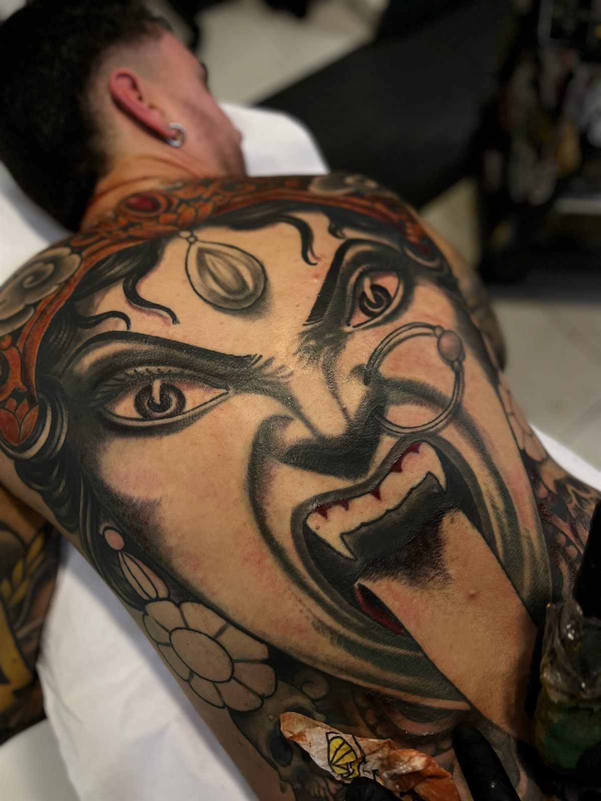
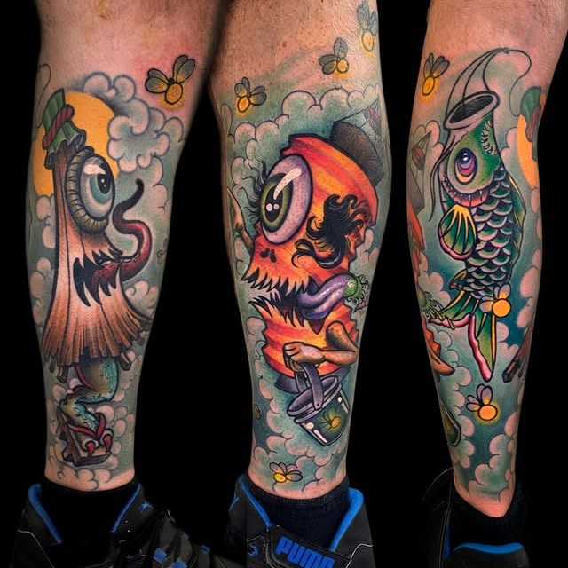
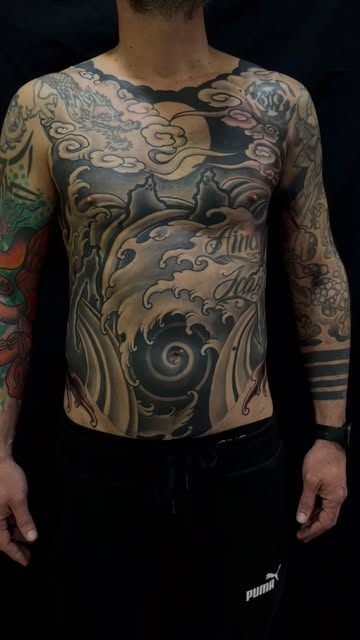
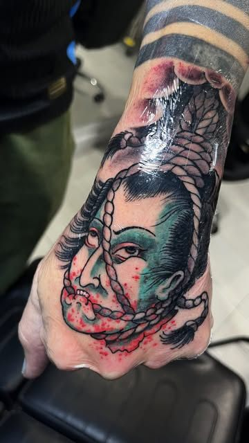
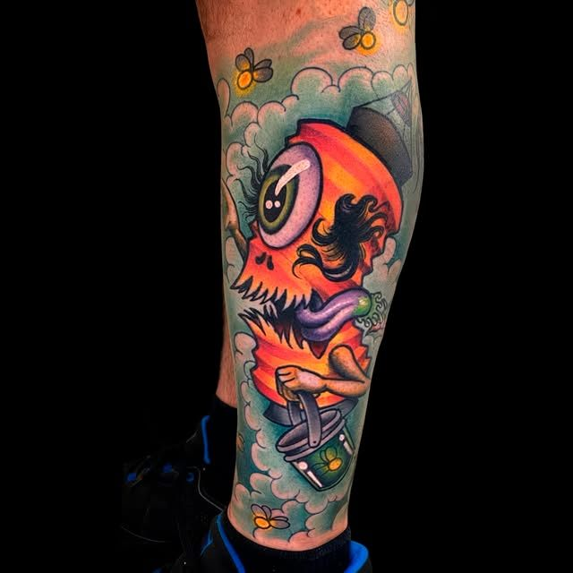
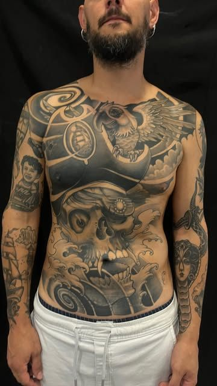
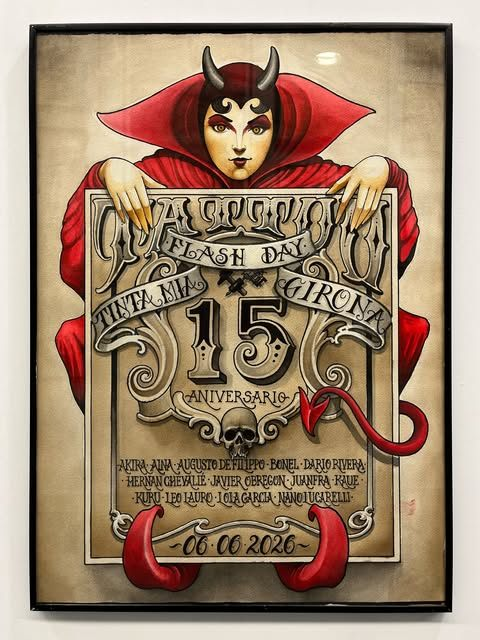

Tattoo · Girona · 15 años
Tatuajes neotradicionales y japoneses a color en Girona
Piezas grandes a color: espaldas, piernas completas y bodysuits. En el centro de Girona, con cita previa.
4,9 en Google · 26 reseñas

Trabajos
Algunas piezas del estudio: piernas, bodysuits, manos y espaldas.





Quince años tatuando en Girona
Tinta Mía es un estudio de tatuaje en el Carrer Bernat Bacià, en el centro de Girona. En 2026 cumplió quince años.
Aquí tatúa Nano Lucarelli: neotradicional y japonés a color, y proyectos grandes que se trabajan por sesiones, como espaldas, piernas completas y bodysuits.

06.06.2026
Flash Day del 15 aniversario
Celebramos los quince años del estudio con un día de flash junto a trece tatuadores: Akira, Aina, Augusto de Filippo, Bonel, Darío Rivera, Hernán Chevalié, Javier Obregón, Juanfra, Kaue, Kuru, Leo Lauro, Lola García y Nano Lucarelli.
Pide tu cita
- 1
Tu idea
Cuéntanos qué quieres tatuarte y mándanos referencias si las tienes.
- 2
Zona y tamaño
Dinos en qué parte del cuerpo y de qué tamaño aproximado.
- 3
Escríbenos
Por Instagram o por correo. Trabajamos con cita previa.
Carrer Bernat Bacià, 7
- Estudio
- Carrer Bernat Bacià, 7 · 17001 Girona
- tintamiatattoo@hotmail.com
- @tintamiatattoo · @nanotattooer